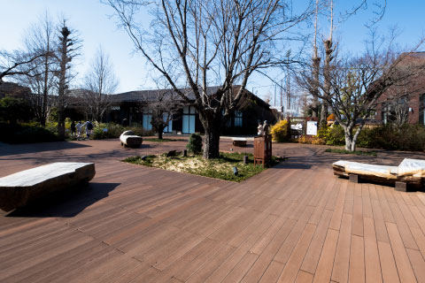
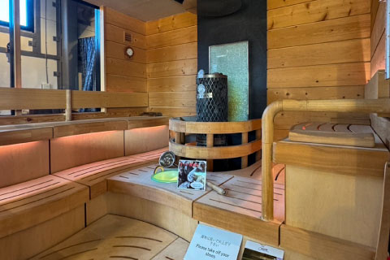

LOCATION


RENO_CAMP TORIYAMA
静かな森の中に佇む【貯水池 鳥山】とコラボした、手ぶらでキャンプ体験ができる人気スポット。準備・片付け不要なので、子どもも大人も楽しめます。「食を楽しむ」というコンセプトをモットーに、季節に応じたプランが充実しており、「キャンプの良いとこどり！」と好評です。現地からは車で約10分！休日に家族で気軽に楽しめるので、オススメです。
東京都東大和市蔵敷1丁目391 現地から車で約8分（3.0km）

CalmbaseTOKYO
全８サイトのウッドデッキ貼り電源付きサイトがある、設備の充実したキャンプ場。貸切風呂、シャワーブース、炊事場、テントサウナ、お洒落で清潔な施設がなんでもあります。アメリカより直輸入した1969年エアストリーム31ftの車両がフロントとなりワクワクする世界観を演出しています。
東大和市蔵敷1丁目296−2 現地から車で約7分（2.6km）
-
狭山湖
現地から車で約9分（4.1km）
昭和9年に東京都の水瓶として完成した巨大な人造湖です。埼玉の『自然百選』や『ダム湖百選』にも選ばれている憩いの場。春には約700Ｍの長い堤防から、ソメイヨシノやヤマザクラなどの約2万本の桜を見渡すことができて、秋には紅葉、夜には夕暮れのロマンチックな雰囲気も楽しめます。
埼玉県所沢市勝楽寺12
-
多摩湖
現地から車で約11分（5.0km）
1916年～1927年の間に建設された歴史ある貯水池です。新東京百景と東やまと20景に選ばれています。雑木の池畔は桜と紅葉の名所として知られており、バードウォッチングや縄文式住居跡の見学に訪れる人々が数多くいます。
東京都東大和市多摩湖１丁目
-
野山北・六道山公園
現地から車まで約6分（2.4km）
首都圏に残された「緑の島」都立狭山自然公園の西端にあり、雑木林と丘陵に切れ込んだ谷間の組合せによって、豊かな自然が残された都立最大の都市公園です。カタクリの群生地やホタルの生息地、里山民家や岸たんぽといった、貴重な里山の風景が広がっており、里山の生活や文化を体験できるほか、ハイキングや野鳥観察、森遊びなど様々な楽しみ方ができる公園です。
東京都武蔵村山市三ツ木5丁目4−2
-
宮寺ふくろうの丘公園
現地から車まで約20分（5.8km）
一般財団法人緑化再生機構が緑化に向けた活動している、自然豊かな公園です。さまざまな小動物や昆虫が姿を見せてくれる、少年心くすぐる大自然が身近にある悦び。身近で都会の喧騒を離れ、やすらぎを享受できる、憩いの場でもあります。
埼玉県入間市宮寺1537
LOCATION

昭島モリパーク アウトドアヴィレッジ
現地から車で約23分（7.2km）
アウトドアブランドの直営店や、こだわりの飲食店、クライミングジムやヨガスタジオが、緑や池、芝生に囲まれた敷地内に集合し、ファミリーで気軽にアウトドア気分を体験・体感できるイベントも多数開催されています。
昭島モリパークに位置するアウトドアに特化した複合商業施設です。
所在地 ：東京都昭島市蔵敷田中町610−4
駐車場 ：P6（ご利用時間 8：30～22：30・120台）
：P7（ご利用時間 8：30～24：30・120台）
営業時間：平日 10:00～20:00
土日祝 10:00～20：00
定休日 ：水曜日（祝日の場合は営業）
- 
コールマンやスノーピーク等、世界的に有名なアウトドアショップが立ち並び、色々なブランドを見て回れるショッピングモールですが、魅力はお買い物だけではありません。日本初めてのサウナ専門店「メトスサウナソッピ」や、ヨガやボルダリングを楽しめる「PLAY」、バーベキューができる昭和の森ガーデンCAFE＆BBQ等、アウトドア好きにはたまらない！
-
Coleman
コールマン
国内最大級規模の直営店。相談カウンターやメンテナンスルーム、サンドブラストや刺繍サービス等、多彩なニーズに対応。
-
CHUMS
チャムス
アパレル、バッグなど、お馴染みの商品をはじめ、他のＣＨＵＭＳの直営店では見られないテント、大型のキャンプギアなども実際に手にとって見ることができます。
-
SORA
ソラ
世界各国の優れたブランドからウェアやギアを展開するセレクトショップSORA。Patagonia、MAMMUT、KEEN、GRAMICCIなど人気ブランドを幅広く取り扱っています。
-
THE NORTH FACE
ザ・ノース・フェイス
国内最大のTHE NORTH FACEショップです。併設のCafeや各種イベント等、ここでしか味わえない体験も魅力的ですね。
-
Columbia
コロンビア
アウトドアだけでなくカジュアルでも楽しめる機能性とデザイン性を備えた商品を展開。レベルに応じて様々なタイプから選べるトレッキングシューズやトレイルランニングシューズを多数ラインナップ。
-
mont-bell
モンベル
モンベルのほぼすべてのラインナップを展開。登山、キャンプ、自転車、カヤック等、多彩なアクティビティをサポートしてくれます。
-
snow peak
スノーピーク
オートキャンプ製品を中心にハイエンドなアウトドア製品の開発・製造・販売を展開するブランドの直営店。
-
A&F COUNTRY HEDGE
A＆F カントリーヘッジ
「良いものを永く」をコンセプトに世界のアウトドア用品を厳選。直営店最大の売り場にギア、バック、ウェア等、全カテゴリーを網羅しています。
-
Metos Sauna Soppi
メトス サウナ ソッピ

- 
今までにない北欧スタイルのお店“サウナソッピ”。サウナを愛する人たちに向けたショップ限定品を多数取り揃えたサウナ専門店です。サウナハット、アロマなどのアイテムの他、アウトドアサウナをはじめロウリュ体験などもできる人気のお店です。「サウナ後のアイスクリーム」は、フィンランド人の定番。併設されたCafeでフィンランドで人気のJYMY（ユミュ）アイスクリームを味わえます。
-
イオンモール
現地から車で約8分（2.3km）
映画館やゲームセンターも入っているショッピングモールが車で10分圏内。休日のお出かけはもちろん、日常的なお買い物にも便利な複合型商業施設です。自転車でも10分ほどで行くことができる為、話題の作品を観に気軽に映画館へ。
東京都武蔵村山市榎1丁目1−3
-
カインズホーム
現地から車で約23分（7.0km）
周辺住民で賑わいを見せるホームセンター。日用品だけでなく、新鮮なお野菜、お菓子、お酒、薬品なども揃っており、さまざまな用途で活用できる施設です。ここで購入した材料や工具を使って、アウトドアギアをDIYするのも、楽しみのひとつです。
東京都昭島市つつじが丘2丁目8−55
-
IKEA
現地から車で約23分（6.9km）
もはや知らない人はいない（！？）、世界的に有名な大手家具量販店のIKEAが車で20分弱の立地にあるのは大きなポイントです。リーズナブルで可愛らしい家具の購入はもちろん、気軽にスウェーデン料理が楽しめるレストランやフードマーケットもあり、家族でお出掛けするのにオススメです。
東京都立川市緑町6
-
ららぽーと
現地から車で約20分（5.8km）
キッズエリアを備えた芝生の公園や、それを囲むレストランゾーンが楽しめるららぽーと立川立飛まで、車で行きやすい立地です。樹木の緑と青い空をイメージした室内でも自然を感じることができる、居心地の良い空間です。
東京都立川市泉町935−1
LIFE INFORMATION
-
武蔵村山市立第三小学校
徒歩6～8分（約470m～570m）
-

武蔵村山市立第三中学校
徒歩11～12分（約810m～910m）
-
あゆみ保育園
徒歩5～6分（約340m～440m）
-
つみき保育園
徒歩12～13分（約1040m）
-
コメリ武蔵村山中央店
徒歩4～5分（約300m～400m）
-
いなげやむさし村山店
徒歩15～16分（約1260m）
-
オリンピック村山店
徒歩23～24分（約1870m）
-
ファミリーマート武蔵村山神明店
徒歩5～6分（約350m～450m）
-
ベルク東大和立野店
徒歩26～28分（約2100m）
-
ファッションセンターしまむら
徒歩3～4分（約230m～320m）
-
村山医療センター
徒歩12～13分（約1000m）
-
東京小児療育病院
徒歩14～15分（約1100m）
ACCESS
住協チャンネル
本物件の他にも、仲介手数料不要の未発表物件が多数ございます。 周辺エリアで不動産購入をご検討の方は、お気軽にお問合せください。